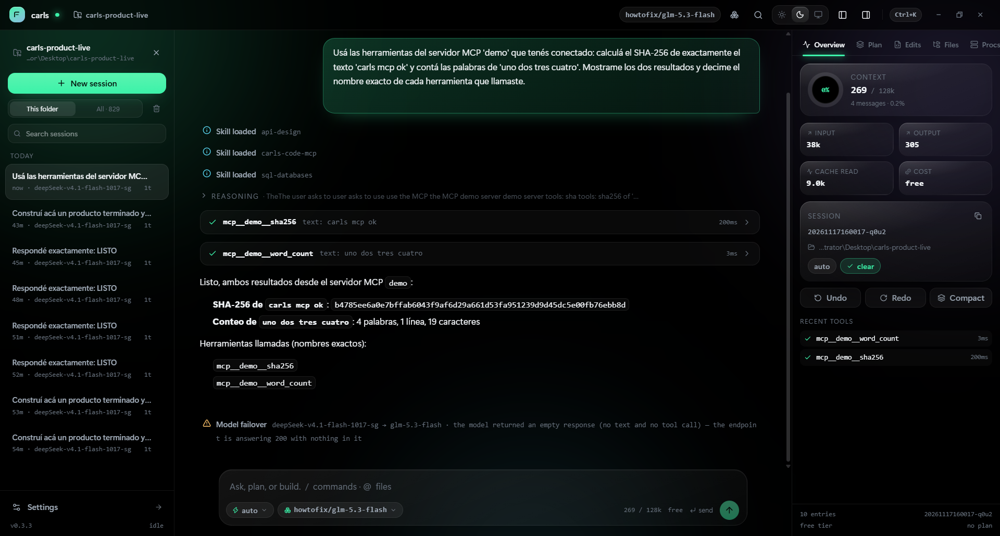
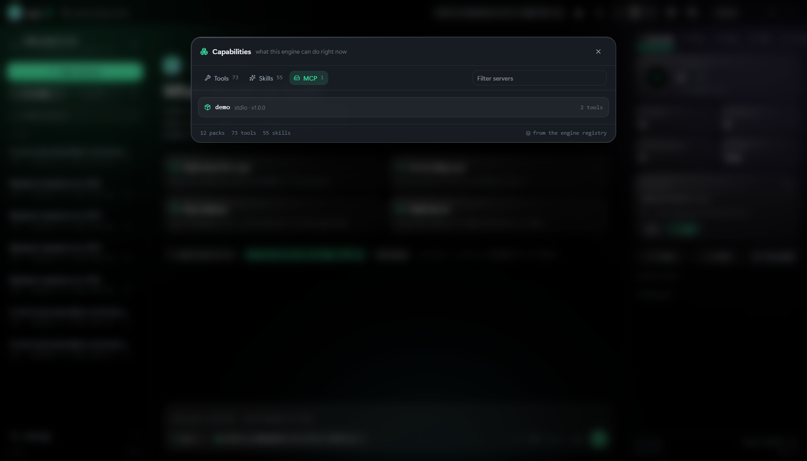
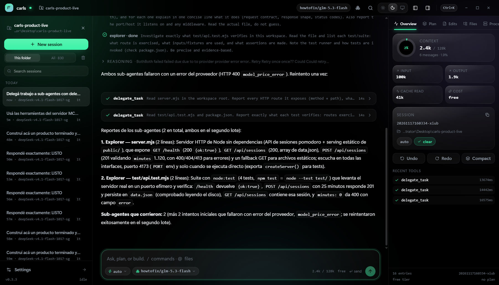
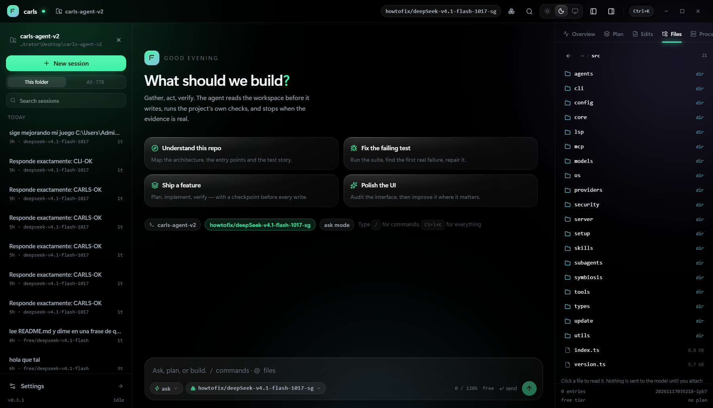
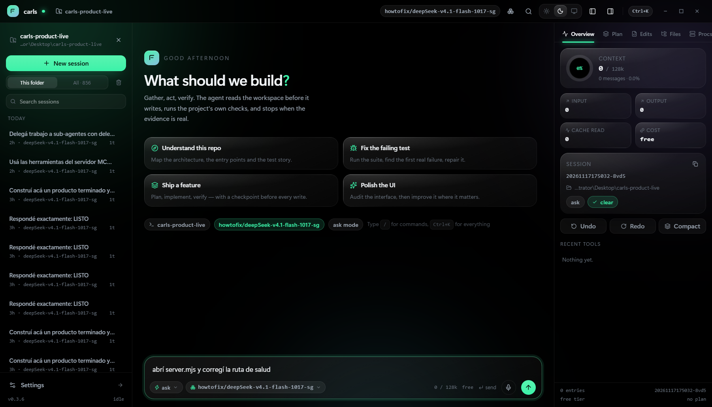
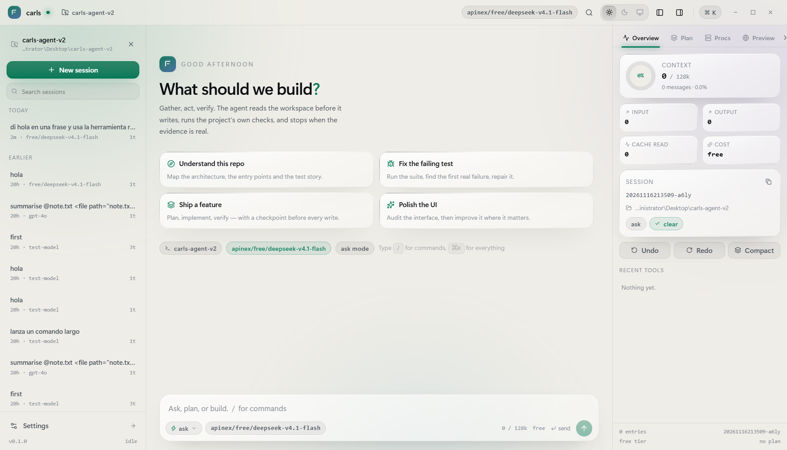
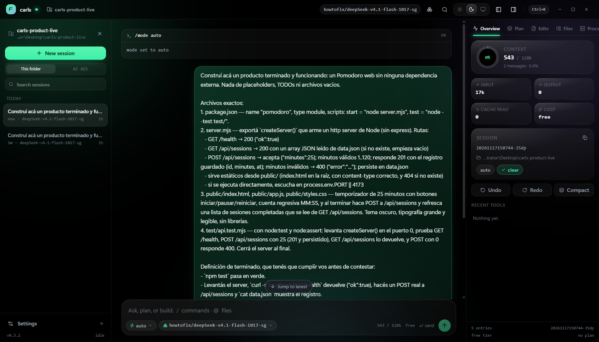

Un agente que termina el trabajo.
carls lee tu proyecto, edita archivos, ejecuta los tests y verifica hasta que pasan. Corre nativo en tu máquina —sin contenedores—, con tus claves y sin telemetría. La misma sesión vive en el escritorio y en la terminal, así que podés empezar en una ventana y seguir en la otra.
Windows x64 · Linux x64 · sin firmar (beta) · ~125 MB

El agente a la vista, no una caja negra.
Cada herramienta que el agente llama aparece con su argumento, su duración y su resultado. Si algo falla, el error queda en el transcript —el mismo que el modelo leyó para corregirse—. Estas son capturas de sesiones reales, con crédito real.





Un Pomodoro de cero, verificado por fuera.
Le pedí un producto completo desde una carpeta vacía: servidor Node sin dependencias, API con persistencia, interfaz y tests. Trabajó solo, con crédito real. Después lo verifiqué yo, por fuera de la app.

En ese turno el gateway devolvió una respuesta vacía; el agente lo detectó, saltó al modelo siguiente y lo mostró como advertencia. Ese arreglo salió de esta prueba.
Herramientas de verdad, no una lista de deseos.
El agente publicita un pack según el trabajo; la ejecución siempre puede llamar al registro completo. Un pack que no se puede alcanzar es peso muerto, y por eso la lista de abajo es la que corre.
Gather · act · verify
Leer, buscar, editar, aplicar un patch, correr un comando, mirar el diff. El turno no termina en una promesa: termina en la verificación del proyecto.
Sub-agentes en paralelo
Un delegate_task abre contextos aislados para explorar, planificar, auditar o implementar, y devuelve un reporte. El contexto principal queda limpio.
MCP, con o sin presets
Servidores MCP por stdio o remotos, agregados desde la app o desde el archivo. Sus herramientas se llaman como cualquier otra y se ven en el transcript.
Modo audio
Hablás en vez de escribir. La nota de voz se transcribe y cae en el composer para que la corrijas: nunca se envía sola, ni en yolo. Cualquier endpoint compatible con /audio/transcriptions sirve, incluido uno local.
La CLI viaja como programa, no como código.
El binario de Windows es un único carls.exe con el bundle, las skills y la versión
adentro: no necesita Node, ni npm, ni el repositorio. En Linux son dos archivos y el
node que ya tenés. En ningún caso se distribuye el TypeScript.
Una cosa que ejecutar
carls.exe -p "arreglá los tests" --yolo. Si querés el comando en el PATH, --install-win lo copia y agrega la carpeta al usuario, sin tocar el sistema.
Mismo motor que el escritorio
La app es un cliente del mismo servidor HTTP + SSE. Un turno abierto en la ventana se puede seguir con carls attach, y una sesión de terminal aparece en la barra lateral.
Tu configuración, un archivo
.carlsrc.json en la carpeta o en tu home: proveedor, modelo, clave. La CLI y la app leen el mismo, así que configurar una vez alcanza.
Elegí cómo lo querés.
Todo es la versión 0.3.7. El escritorio es un instalador por usuario (sin permisos de administrador) o un portable; la CLI es un binario suelto.
Escritorio
Windows x64Instalador por usuario: elegís carpeta, accesos en el escritorio y el menú de inicio. Sin admin.
Escritorio
Linux x64Tar con el binario y sus dependencias. Las instrucciones están en el README-linux.txt del paquete.
CLI
Windows x64Un solo carls.exe con todo adentro. No necesita Node ni el repositorio.
CLI
Linux x64El bundle compilado y un launcher; usa el node 20+ que ya tengas instalado.
Sin firma de código. Windows SmartScreen advierte la primera vez y no hay actualización silenciosa: la app te avisa cuando hay una versión nueva y la bajás vos. Por qué.
Tu máquina, tus claves, tu sesión.
Nada sale de acá
No hay telemetría ni servicio intermedio. El único tráfico es el que va al proveedor de modelo que configuraste, con la clave que pusiste.
Herramientas encerradas
Los archivos y el shell quedan dentro del workspace salvo que habilites explícitamente lo contrario. Los enlaces simbólicos que escapan se rechazan.
Aprobaciones reales
En modo ask cada escritura y cada comando se aprueba con el permiso exacto que pidió el motor, desde la ventana o desde la terminal.
Lo que conviene saber antes.
¿El código es abierto?
No. El repositorio es privado desde esta versión. Lo que se distribuye son los binarios compilados: el .exe de la CLI, el instalador del escritorio y los paquetes de Linux. Si necesitás auditar el código para tu empresa, escribinos.
¿Por qué aparece SmartScreen?
Porque el build no está firmado: no hay certificado de code signing. Firmar cuesta un certificado anual y, sin él, Windows advierte ante un ejecutable desconocido. Firmar está pendiente; mientras tanto, el aviso es esperable y no significa que el archivo esté alterado.
¿Se actualiza solo?
No. La app consulta un archivo de versión en esta página y, si hay una versión nueva, muestra un aviso con el enlace. La descarga y la instalación las hacés vos. Un actualizador silencioso que no puede verificar la firma del editor falla en el último paso, y eso es peor que no tenerlo.
¿Qué proveedores de modelo acepta?
Cualquier endpoint compatible con la API de OpenAI, más Anthropic y Google. Configurás URL base, clave y modelo; si el gateway expone /models, la app lista los modelos disponibles sin que los inventemos.
¿Funciona sin internet?
El agente necesita el proveedor de modelo, así que no. Todo lo demás —herramientas, archivos, tests, git, la interfaz— corre local.
¿Linux está probado?
El paquete se arma desde Windows: verifiqué contenido, permisos y dependencias, pero no lo ejecuté en un host Linux. Si lo probás y algo falla, mandanos el error.